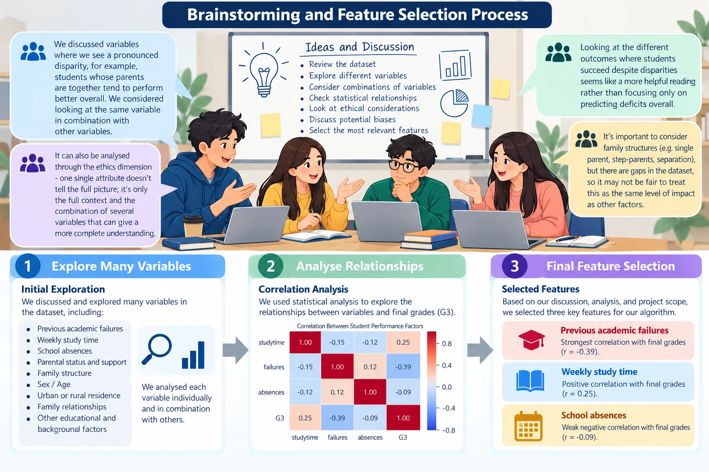

What the student performance data describes, where it came from, and why these features were selected.
Source and scope
Our analysis uses a publicly shared student performance dataset with 649 records and 33 attributes. It includes academic outcomes, attendance, study habits, and other background variables.
The Kaggle page hosts the data used in this project. Consult the source page for its attribution and usage conditions.
OUR RESEARCH PROCESS
From Team Brainstorming to Feature Selection
Our group began by discussing several academic, family, and demographic variables. We considered how student circumstances may interact, why individual characteristics do not tell the full story, and how to avoid overly simplistic or potentially unfair interpretations.
We then explored descriptive statistics and correlations with final grade (G3). Balancing interpretability, project scope, and the available data, we chose previous failures, weekly study time, and school absences for our initial rule-based algorithm.

Figure 1.
Brainstorming and feature selection process, illustrated using an AI tool based on our group’s discussions and analysis.
Why these three? Previous failures showed the strongest correlation with final grade (approximately −0.39), followed by study time (+0.25). Absences had a much weaker linear correlation (−0.09), but were retained as an interpretable attendance-related factor to test. Correlation alone does not establish causation or validate the scoring weights.
FEATURE SELECTION
Three inputs. One evaluation outcome.
INPUT 01Previous failuresPast academic difficulty
INPUT 02Study timeWeekly study-time category
INPUT 03AbsencesAttendance pattern
Variables used in the project
Variable
Meaning
Role
failures
Number of previous class failures (0–3)
Risk input
studytime
Weekly study-time category (1–4)
Risk input
absences
Number of school absences
Risk input
G3
Final grade (0–20)
Evaluation only
Why these variables?
Previous failures: a direct indicator of past academic difficulty.
Study time: a simple representation of study habits.
Absences: a potential signal of reduced classroom participation.
We selected only three inputs to keep the rules understandable and feasible to implement and explain.
Why not use G3 as an input?
G3 is the outcome we want to evaluate against. Including it in the risk score would leak the answer into the prediction. Instead, we use G3 < 10 to mark an actual failure after the risk label has been assigned.
Data preparation and limitations
Before scoring, the algorithm checks required values, validates expected ranges, and flags completely identical rows as possible duplicates. An identical row is not proof that two records represent the same student, so duplicate handling should be interpreted cautiously.
Our preliminary run reported 649 cleaned records, with no missing, invalid, or identical-row records removed. The dataset is observational, so associations do not prove causation.